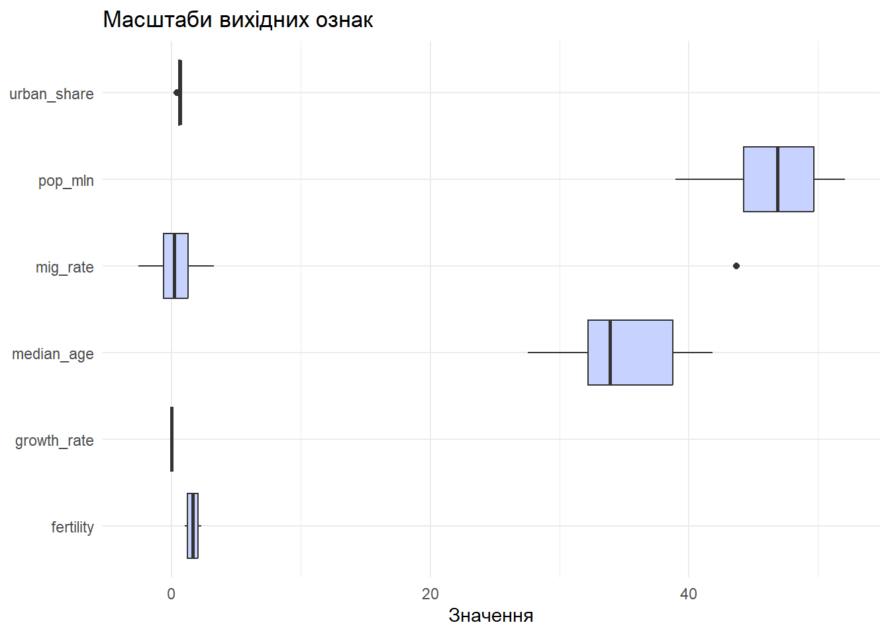
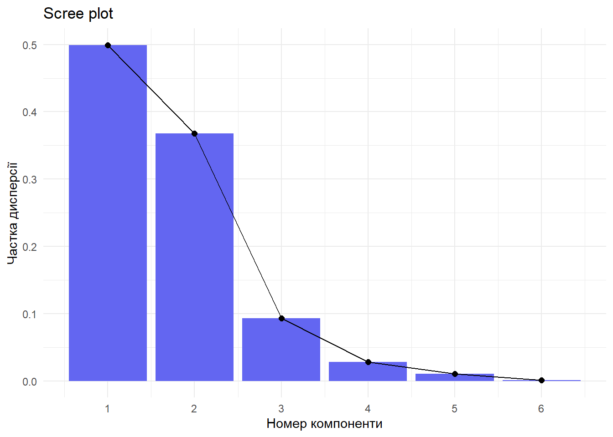
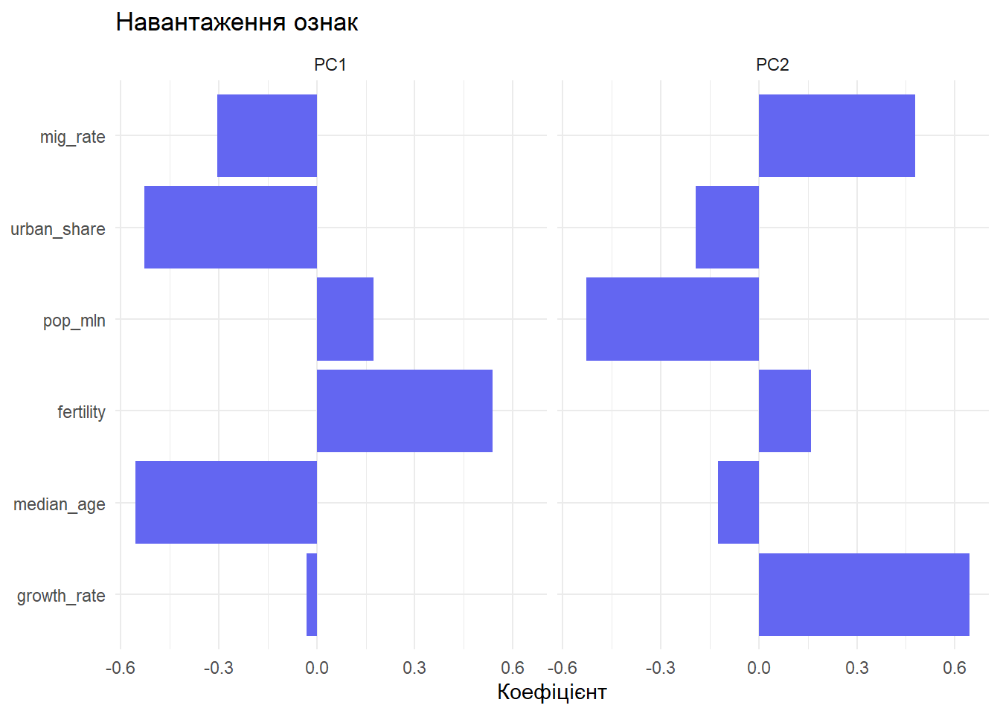
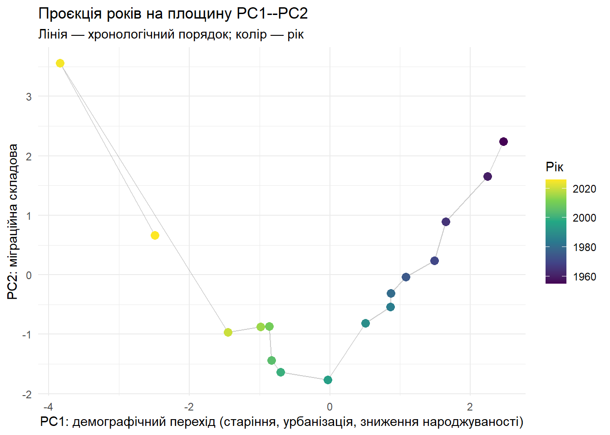
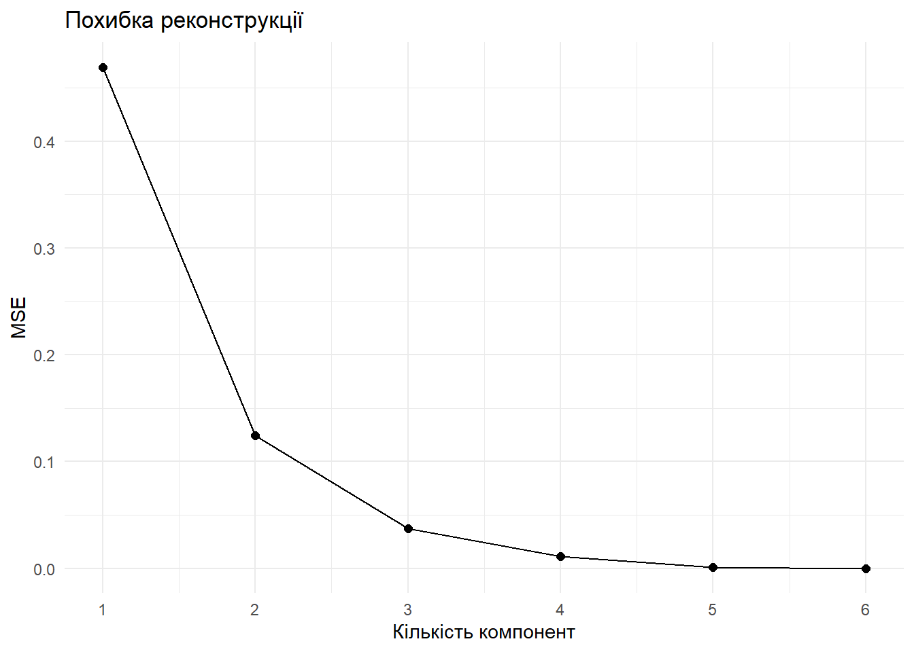
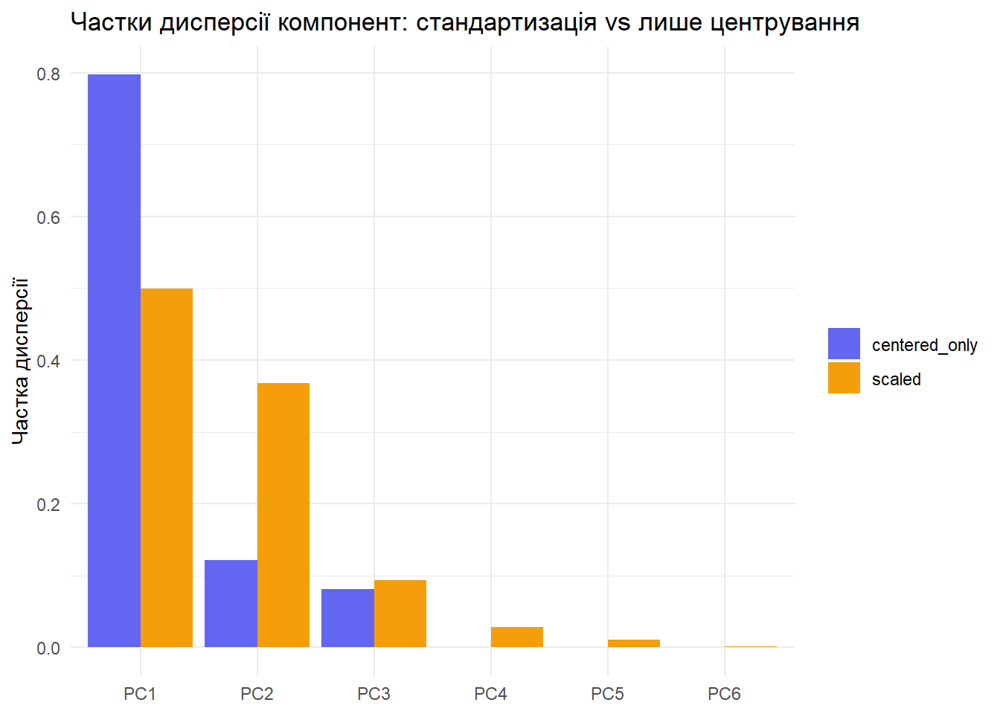

# install.packages(c("tidyverse", "jsonlite"))Лабораторна робота № 4. Зниження розмірності даних методом головних компонент
Документ зроблено в Quarto
Мета: опанувати побудову й інтерпретацію методу головних компонент (Principal Component Analysis, PCA) на даних наскрізного проєкту: сформувати матрицю ознак, обґрунтувати масштабування, обчислити головні компоненти, оцінити пояснену дисперсію, інтерпретувати навантаження й проєкції, дослідити втрати інформації при зниженні розмірності.
Індивідуальне завдання
Дані — демографічний набір щодо України за 1950–2026 рр. (Worldometer, отриманий через html/json mining у ЛР2, файл data/raw/median_year.json; той самий набір використано у ЛР3). Початкові файли не змінюємо.
Виконані пункти індивідуального завдання:
- сформовано матрицю з шести кількісних ознак на рівні року (спостереження), з двома похідними ознаками;
- перевірено пропуски, константні стовпці, дублікати та масштаб; обґрунтовано scale. = TRUE;
- виконано PCA (stats::prcomp()), побудовано таблицю власних значень та часток поясненої дисперсії;
- порівняно проєкцію на дві компоненти з кількістю компонент, необхідною для 80% дисперсії;
- проінтерпретовано навантаження PC1 і PC2, побудовано проєкцію спостережень і досліджено реконструкційну похибку;
- порівняно PCA зі стандартизацією та лише з центруванням;
- сформульовано висновок щодо збереження/втрати інформації та обмежень PCA.
Хід роботи
Крок 1. Підготовка середовища
library(tidyverse)
library(jsonlite)
dir.create("figures", showWarnings = FALSE)
dir.create("data/processed", recursive = TRUE, showWarnings = FALSE)Крок 2. Завантаження даних ЛР2–ЛР3
demo_path <- "data/raw/median_year.json"
if (!file.exists(demo_path)) {
stop("Не знайдено data/raw/median_year.json")
}
demo <- fromJSON(demo_path) |>
select(year, total, medianAge, fertilityRate, urban, migrantNet, yearlyGrowthRate)
glimpse(demo)Rows: 17
Columns: 7
$ year <int> 1950, 1955, 1960, 1965, 1970, 1975, 1980, 1985, 1990,…
$ total <int> 37310887, 39859711, 42824093, 45386892, 47261306, 488…
$ medianAge <dbl> 26.423, 27.520, 28.342, 29.125, 31.262, 33.054, 32.51…
$ fertilityRate <dbl> 2.447, 2.312, 2.285, 1.943, 2.078, 2.049, 1.949, 2.03…
$ urban <int> 13240665, 16557439, 19962621, 22924810, 25817971, 284…
$ migrantNet <int> 96287, 130668, 52281, 69354, -48335, 15336, 47406, 55…
$ yearlyGrowthRate <dbl> NA, 0.013725217, 0.013725483, 0.009693544, 0.00606795…Одиниця спостереження — один рік демографічної історії України (1950–2026, інтервали 5 років до 2020, потім 2025 і 2026). Змінні:
- total — загальна чисельність населення України на відповідний рік, у осіб. Це підсумкова величина: всі інші демографічні показники набору (урбанізація, міграція, приріст) обчислюються відносно неї. У наборі змінюється від ≈37.3 млн (1950) до піку ≈52 млн (1990) з подальшим тривалим скороченням;
- urban — абсолютна чисельність міського населення, у осіб. Характеризує рівень урбанізації, але у сирому вигляді залежить від загальної чисельності населення (масштабується разом з total), тому в матриці ознак використовується похідна безрозмірна ознака urban_share = urban / total — частка міських мешканців;
- fertilityRate — коефіцієнт народжуваності (total fertility rate): середня кількість дітей, яку народила б одна жінка за все життя при збереженні поточних вікових коефіцієнтів народжуваності. Ключова межа — 2.1 (рівень простого відтворення покоління): останній раз Україна була вище цієї межі у 1960 р.;
- medianAge — медіанний вік населення: вік, який ділить населення навпіл (половина людей молодша, половина — старша за це значення). Компактний індикатор старіння населення; чутливіший до демографічної структури, ніж середній вік, бо не зсунутий довгим хвостом довгожителів;
- migrantNet — нетто-міграція за рік, у осіб: різниця між кількістю прибулих та вибулих (іміграція мінус еміграція). Додатне значення — населення зростає за рахунок міграції, від’ємне — скорочується. У сирому вигляді залежить від чисельності населення, тому в матриці ознак використовується похідна ознака mig_rate = migrantNet / total × 1000 — сальдо міграції на 1000 осіб;
- yearlyGrowthRate — відносний річний приріст населення: річна зміна чисельності, поділена на чисельність попереднього року (частка, а не абс. числа). Поєднує обидва джерела динаміки — природний рух (народжуваність мінус смертність) і міграцію. Від’ємні значення з кінця 1990-х відображають депопуляцію.
Крок 3. Формування матриці ознак
Створюємо шість кількісних ознак на узгодженому рівні «рік». Дві з них — похідні:
- urban_share — частка міського населення (urban / total): характеризує урбанізацію в безрозмірній формі; сира кількість urban майже повністю дублювала б масштаб total;
- mig_rate — нетто-міграція на 1000 осіб населення (migrantNet / total * 1000): міграція в масштабі, порівнянному між роками з різною чисельністю населення.
features <- demo |>
transmute(
year,
pop_mln = total / 1e6,
urban_share = urban / total,
fertility = fertilityRate,
median_age = medianAge,
mig_rate = migrantNet / total * 1000,
growth_rate = yearlyGrowthRate
)
feature_names <- c("pop_mln", "urban_share", "fertility", "median_age", "mig_rate", "growth_rate")Крок 4. Перевірки придатності ознак для PCA
Пропуски, константні стовпці, дублікати ключа, фінітність:
checks <- features |>
summarise(
n_rows = n(),
duplicated_years = anyDuplicated(year),
across(all_of(feature_names),
list(missing = ~sum(is.na(.x)),
nonfin = ~sum(!is.finite(.x)),
distinct = ~n_distinct(.x),
sd = ~sd(.x)))
)
checks |>
pivot_longer(-n_rows, names_to = "check", values_to = "value")Перевіримо, які рядки містять пропуски:
features |>
filter(if_any(all_of(feature_names), ~is.na(.x) | !is.finite(.x))) |>
select(year, all_of(feature_names))Пропуски у growth_rate і mig_rate є лише для 1950 р. (у джерелі yearlyGrowthRate і частина полів за 1950 р. відсутні — немає попереднього року для обчислення). Такі рядки не можна «винайти», тому для PCA залишаємо лише повні рядки:
analysis_data <- features |>
filter(if_all(all_of(feature_names), ~is.finite(.x)))
X <- analysis_data |>
select(all_of(feature_names)) |>
as.matrix()
stopifnot(
nrow(X) > 2,
!anyDuplicated(analysis_data$year),
all(apply(X, 2, sd) > 0)
)
nrow(analysis_data)[1] 16round(cor(X), 3) pop_mln urban_share fertility median_age mig_rate growth_rate
pop_mln 1.000 0.068 0.170 -0.211 -0.504 -0.674
urban_share 0.068 1.000 -0.861 0.917 0.315 -0.149
fertility 0.170 -0.861 1.000 -0.922 -0.285 0.217
median_age -0.211 0.917 -0.922 1.000 0.319 -0.138
mig_rate -0.504 0.315 -0.285 0.319 1.000 0.713
growth_rate -0.674 -0.149 0.217 -0.138 0.713 1.000Кореляційна матриця: найсильніші зв’язки — від’ємні між fertility та median_age, між growth_rate та median_age, додатний між pop_mln та urban_share. Це очікувано: демографічні показники рухаються спільним часовим трендом, і PCA має «згорнути» ці скорельовані групи в небагато компонент.
Крок 5. Масштаб ознак і вибір стандартизації
analysis_data |>
pivot_longer(all_of(feature_names), names_to = "feature", values_to = "value") |>
ggplot(aes(x = feature, y = value)) +
geom_boxplot(fill = "#c7d2fe") +
coord_flip() +
labs(title = "Масштаби вихідних ознак", x = NULL, y = "Значення") +
theme_minimal()
Масштаби несумісні: чисельність населення — десятки мільйонів, коефіцієнт народжуваності — близько 1, частки — від 0 до 1, темп приросту — тисячні частки. PCA мінімізує дисперсію, тому без масштабування PC1 повністю «з’їла» б pop_mln, а решта ознак не вплинула б на структуру. Отже, обґрунтовано center = TRUE, scale. = TRUE (PCA над кореляційною матрицею).
Крок 6. Побудова PCA
pca <- prcomp(X, center = TRUE, scale. = TRUE)
summary(pca)Importance of components:
PC1 PC2 PC3 PC4 PC5 PC6
Standard deviation 1.7309 1.4856 0.74730 0.41094 0.25490 0.06747
Proportion of Variance 0.4994 0.3678 0.09308 0.02815 0.01083 0.00076
Cumulative Proportion 0.4994 0.8672 0.96027 0.98841 0.99924 1.00000pca\(x — координати спостережень (*scores*), pca\)rotation — навантаження (loadings), pca$sdev — стандартні відхилення компонент.
eigenvalues <- pca$sdev^2
variance_table <- tibble(
component = paste0("PC", seq_along(eigenvalues)),
eigenvalue = round(eigenvalues, 4),
explained = round(eigenvalues / sum(eigenvalues), 4),
cumulative = round(cumsum(eigenvalues / sum(eigenvalues)), 4)
)
variance_tableВласні значення коваріаційної матриці стандартизованих даних показують дисперсію кожної компоненти. Для стандартизованих даних середнє власне значення дорівнює 1, тому компоненти з \(\lambda > 1\) несуть більше інформації, ніж одна вихідна ознака (критерій Кайзера).
Крок 7. Скільки компонент залишити?
p_scree <- variance_table |>
ggplot(aes(x = seq_along(explained), y = explained)) +
geom_col(fill = "#6366f1") +
geom_line(aes(group = 1)) +
geom_point(size = 2) +
scale_x_continuous(breaks = seq_len(nrow(variance_table))) +
labs(title = "Scree plot", x = "Номер компоненти", y = "Частка дисперсії") +
theme_minimal()
p_scree
threshold <- 0.80
k80 <- which(variance_table$cumulative >= threshold)[1]
tibble(
threshold = threshold,
required_components = k80,
explained_at_k = variance_table$cumulative[k80]
)Проєкція на площину PC1–PC2 пояснює лише 87% дисперсії — для візуалізації цього достатньо, щоб побачити основну структуру, але 13% варіації губиться. Для подальшого кількісного аналізу (наприклад, кластеризації у ЛР5) за критерієм 80% потрібно 2 компонент (накопичено 87%). Це два різні рішення, які не слід ототожнювати.
Крок 8. Інтерпретація навантажень
loadings <- as_tibble(pca$rotation, rownames = "feature")
loadingsp_loadings <- loadings |>
select(feature, PC1, PC2) |>
pivot_longer(c(PC1, PC2), names_to = "component", values_to = "loading") |>
ggplot(aes(x = reorder(feature, abs(loading)), y = loading)) +
geom_col(fill = "#6366f1") +
facet_wrap(~component) +
coord_flip() +
labs(title = "Навантаження ознак", x = NULL, y = "Коефіцієнт") +
theme_minimal()
p_loadings
PC1 — це «демографічний перехід»: однаковими за модулем навантаженнями він поєднує ознаки, які монотонно змінювалися з часом (median_age, urban_share, fertility, growth_rate, pop_mln). Знак довільний; за обраного розв’язку роки з високою народжуваністю та молодим населенням мають низькі значення PC1, сучасні роки — високі. PC2 навантажена насамперед на mig_rate та growth_rate, тобто відображає варіацію міграційної складової, яка не пояснюється спільним трендом. PC1 і PC2 слід читати як нові синтетичні напрями, а не як вихідні змінні.
Крок 9. Двовимірна проєкція спостережень
scores <- as_tibble(pca$x[, 1:2, drop = FALSE]) |>
bind_cols(analysis_data |> select(year))
p_scores <- ggplot(scores, aes(x = PC1, y = PC2)) +
geom_path(alpha = 0.4, colour = "grey50") +
geom_point(aes(colour = year), size = 3) +
scale_colour_viridis_c() +
labs(
title = "Проєкція років на площину PC1--PC2",
subtitle = "Лінія — хронологічний порядок; колір — рік",
x = "PC1: демографічний перехід (старіння, урбанізація, зниження народжуваності)",
y = "PC2: міграційна складова",
colour = "Рік"
) +
theme_minimal()
p_scores
Точки впорядковані вздовж PC1 майже строго за часом — PCA «розпізнав» часовий тренд без жодної часової змінної. Відхилення від траєкторії (PC2) припадає на роки з аномальною міграцією. На графіку видно послідовність і плавні зміщення, але зорові скупчення не є кластерами: кластерний аналіз (ЛР5) вимагає окремої процедури з формальним критерієм.
Крок 10. Зв’язок PCA із SVD
Для стандартизованої матриці \(Z\) сингулярний розклад \(Z = UDV^{\mathsf{T}}\): праві сингулярні вектори \(V\) — напрями головних компонент, а квадрати сингулярних чисел, поділені на \(n-1\), — власні значення коваріаційної матриці.
Z <- scale(X, center = TRUE, scale = TRUE)
sv <- svd(Z)
all.equal(unname(sv$d^2 / (nrow(Z) - 1)),
unname(pca$sdev^2), tolerance = 1e-10)[1] TRUEРезультат TRUE підтверджує: prcomp() реалізує PCA через SVD, і обчислення узгоджені з теорією.
Крок 11. Втрати при реконструкції
Порівняємо точність відновлення стандартизованої матриці за \(k = 1, \dots, 6\) компонентами:
reconstruction <- map_dfr(seq_len(ncol(X)), function(k) {
Vk <- pca$rotation[, seq_len(k), drop = FALSE]
Tk <- pca$x[, seq_len(k), drop = FALSE]
Z_hat <- Tk %*% t(Vk)
tibble(k = k, mse = mean((Z - Z_hat)^2))
})
reconstructionp_recon <- ggplot(reconstruction, aes(k, mse)) +
geom_line() + geom_point(size = 2) +
scale_x_continuous(breaks = seq_len(ncol(X))) +
labs(title = "Похибка реконструкції",
x = "Кількість компонент", y = "MSE") +
theme_minimal()
p_recon
MSE монотонно спадає і при \(k = p = 6\) дорівнює нулю: повний набір компонент — це точна заміна базису, жодна інформація не втрачається. При менших \(k\) втрачена дисперсія дорівнює сумі власних значень відкинутих компонент, тому похибка не може зменшуватися при зменшенні \(k\) — кожна наступна компонента за означенням додає максимум можливої дисперсії.
Крок 12. Порівняння: PCA з масштабуванням і без
pca_noscale <- prcomp(X, center = TRUE, scale. = FALSE)
compare <- tibble(
component = paste0("PC", seq_along(pca$sdev)),
scaled = pca$sdev^2 / sum(pca$sdev^2),
centered_only = pca_noscale$sdev^2 / sum(pca_noscale$sdev^2)
) |>
mutate(across(scaled:centered_only, ~round(.x, 4)))
comparecompare |>
pivot_longer(-component, names_to = "variant", values_to = "share") |>
ggplot(aes(x = component, y = share, fill = variant)) +
geom_col(position = "dodge") +
scale_fill_manual(values = c("#6366f1", "#f59e0b")) +
labs(title = "Частки дисперсії компонент: стандартизація vs лише центрування",
x = NULL, y = "Частка дисперсії", fill = NULL) +
theme_minimal()
loadings_noscale <- as_tibble(pca_noscale$rotation, rownames = "feature")
loadings_noscaleБез масштабування PC1 поглинає 80% дисперсії і повністю визначається однією ознакою pop_mln (її дисперсія на порядки більша за решту). Інші ознаки практично не впливають на структуру компонент. Це підтверджує обґрунтування з Кроку 5: для ознак у різних одиницях вимірювання стандартизація обов’язкова.
Крок 13. Підготовка артефактів для ЛР5
write_csv(scores, "data/processed/lab4_pca_scores.csv")
write_csv(variance_table,"data/processed/lab4_pca_variance.csv")
write_csv(loadings, "data/processed/lab4_pca_loadings.csv")
write_csv(analysis_data, "data/processed/lab4_features.csv")
ggsave("figures/lab4_scree.png", p_scree, width = 8, height = 5)
ggsave("figures/lab4_loadings.png",p_loadings, width = 8, height = 5)
ggsave("figures/lab4_scores.png", p_scores, width = 9, height = 6)
ggsave("figures/lab4_reconstruction.png", p_recon, width = 8, height = 5)Для кластеризації у ЛР5 координати компонент обираються з урахуванням поясненої дисперсії: у lab4_pca_scores.csv збережено PC1–PC2 для візуалізації, за потреби кількість компонент збільшується до 2.
Крок 14. Фіксація середовища
sessionInfo()R version 4.6.1 (2026-06-24 ucrt)
Platform: x86_64-w64-mingw32/x64
Running under: Windows 10 x64 (build 19044)
Matrix products: default
LAPACK version 3.12.1
locale:
[1] LC_COLLATE=Russian_Russia.utf8 LC_CTYPE=Russian_Russia.utf8
[3] LC_MONETARY=Russian_Russia.utf8 LC_NUMERIC=C
[5] LC_TIME=Russian_Russia.utf8
time zone: Europe/Kiev
tzcode source: internal
attached base packages:
[1] stats graphics grDevices utils datasets methods base
other attached packages:
[1] jsonlite_2.0.0 lubridate_1.9.5 forcats_1.0.1 stringr_1.6.0
[5] dplyr_1.2.1 purrr_1.2.2 readr_2.2.0 tidyr_1.3.2
[9] tibble_3.3.1 ggplot2_4.0.3 tidyverse_2.0.0
loaded via a namespace (and not attached):
[1] generics_0.1.4 stringi_1.8.9 hms_1.1.4 digest_0.6.39
[5] magrittr_2.0.5 evaluate_1.0.5 grid_4.6.1 timechange_0.4.0
[9] RColorBrewer_1.1-3 fastmap_1.2.0 viridisLite_0.4.3 scales_1.4.0
[13] textshaping_1.0.5 cli_3.6.6 rlang_1.3.0 crayon_1.5.3
[17] bit64_4.8.6 withr_3.0.3 yaml_2.3.12 otel_0.2.0
[21] tools_4.6.1 parallel_4.6.1 tzdb_0.5.0 vctrs_0.7.3
[25] R6_2.6.1 lifecycle_1.0.5 bit_4.6.0 vroom_1.7.1
[29] ragg_1.5.2 pkgconfig_2.0.3 pillar_1.11.1 gtable_0.3.6
[33] glue_1.8.1 systemfonts_1.3.2 xfun_0.60 tidyselect_1.2.1
[37] rstudioapi_0.19.0 knitr_1.52 farver_2.1.2 htmltools_0.5.9
[41] rmarkdown_2.32 labeling_0.4.3 compiler_4.6.1 S7_0.2.2 Висновок
- Матриця ознак. Сформовано матрицю \(n \times p\) на рівні «рік» (\(n = 16\) повних спостережень, \(p = 6\) ознак), з двома похідними безрозмірними ознаками (urban_share, mig_rate). Перевірено відсутність дублікатів ключа та константних стовпців; єдиний пропуск (1950 р.) усунено відбором повних рядків без імпутації.
- Масштабування. Обґрунтовано scale. = TRUE: ознаки вимірюються в різних одиницях (млн осіб, роки, частки, проміле), і без стандартизації PC1 поглинала б 80% дисперсії, зводячись до однієї ознаки pop_mln.
- Структура компонент. Перша компонента (≈ 50% дисперсії) інтерпретується як «демографічний перехід» — спільний тренд старіння, урбанізації та зниження народжуваності; друга (≈ 37%) — як міграційна складова. Проєкція років на PC1–PC2 відтворює хронологію без жодної часової змінної, що підтверджує змістовність компонент.
- Кількість компонент. Двовимірна проєкція пояснює ≈ 87% дисперсії і годиться для візуалізації; для подальшого аналізу за критерієм 80% потрібно 2 компонент. Це різні критерії для різних цілей.
- Втрати інформації. Реконструкційна похибка монотонно спадає до нуля при \(k = p\): PCA — лінійний метод, і вся втрачена при зниженні розмірності дисперсія дорівнює сумі відкинутих власних значень. Нелінійні структури (якщо б вони були) PCA не відтворив би.
- Обмеження. PCA зберігає напрям максимальної лінійної варіації, а не групову структуру; видимі скупчення на площині PC1–PC2 не є доказом кластерів — їх наявність має підтвердити окремий кластерний аналіз (ЛР5). Знак компонент довільний, а PCA не встановлює причинності: сильні кореляції тут значною мірою пояснюються спільним часовим трендом.